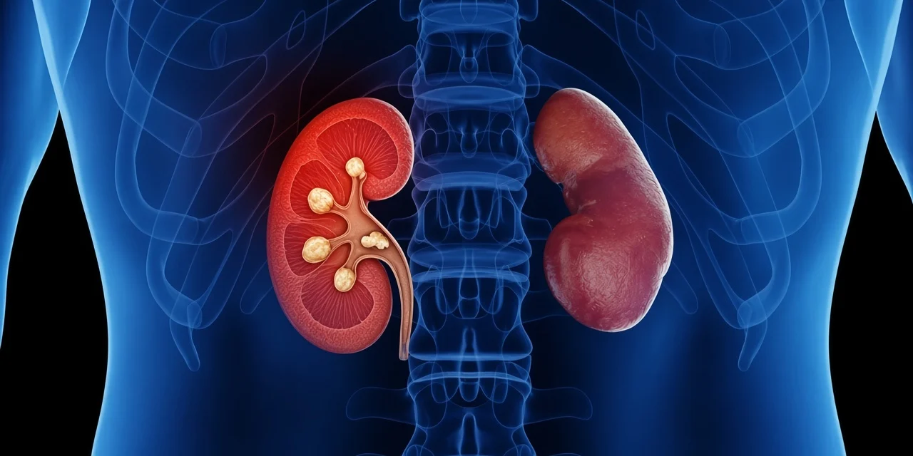

Cálculo renal (pedra no rim)

O cálculo renal, conhecido como pedra no rim, é um depósito de minerais que se forma nas vias urinárias. Muitos são pequenos e saem sozinhos, mas outros bloqueiam o fluxo da urina e causam a cólica renal: dor forte nas costas ou na lateral do abdome, às vezes com sangue na urina, náuseas e vômitos.
A conduta depende do tamanho, da posição e dos sintomas. Em alguns casos basta acompanhar e tratar a dor. Quando há indicação de procedimento, as opções incluem a ureteroscopia com laser (na maioria dos casos), um procedimento minimamente invasivo e endoscópico, com alta normalmente no mesmo dia, e, para cálculos muito maiores, podemos usar técnicas mais avançadas, como a cirurgia percutânea. A escolha é feita na consulta, depois da avaliação e dos exames de imagem.
Depois do tratamento, o urologista orienta como reduzir o risco de novos cálculos, com hidratação e ajustes na alimentação.
Dor forte acompanhada de febre pede atendimento de urgência.
Dr. Marco Antônio Corsetti, urologista — CRM 52.94351-7 · RQE 31969.
Fale com o Jorge, nosso secretário virtual 24h
O Jorge atende pelo WhatsApp a qualquer hora, tira dúvidas e conduz o seu agendamento.
(21) 96785-6074Perguntas frequentes
Toda pedra no rim precisa de cirurgia?
Não. Cálculos pequenos podem sair espontaneamente, com acompanhamento. O procedimento é indicado conforme tamanho, posição, dor e risco de infecção.
Quando procurar o urologista?
Diante de cólica renal, sangue na urina ou cálculo já visto em exame. Febre junto com a dor é urgência.
Dá para evitar novos cálculos?
Em muitos casos sim, com ingestão adequada de líquidos e orientação alimentar individualizada.
Consulta na Barra e em Ipanema
Veja também
Câncer de próstata Hiperplasia prostática benigna Câncer de rim